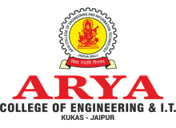
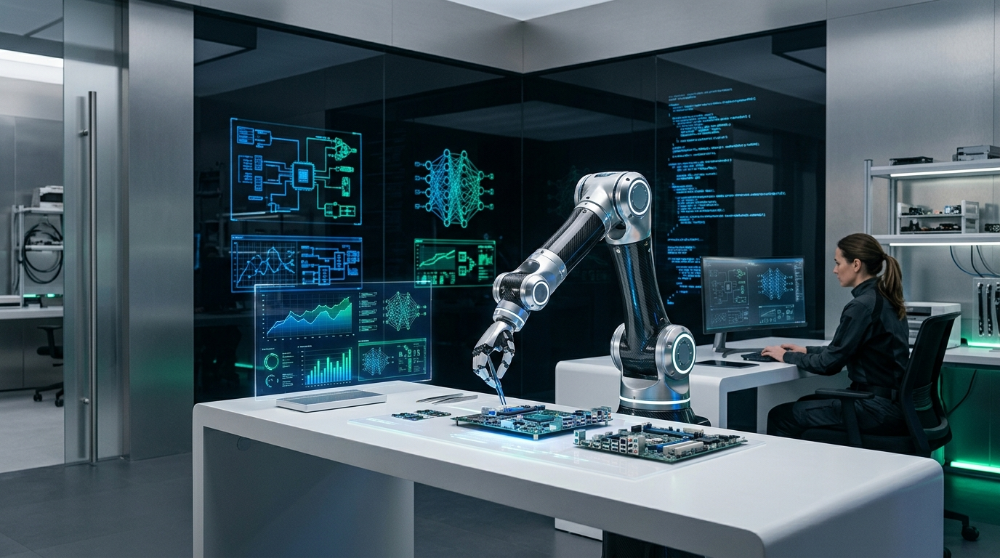
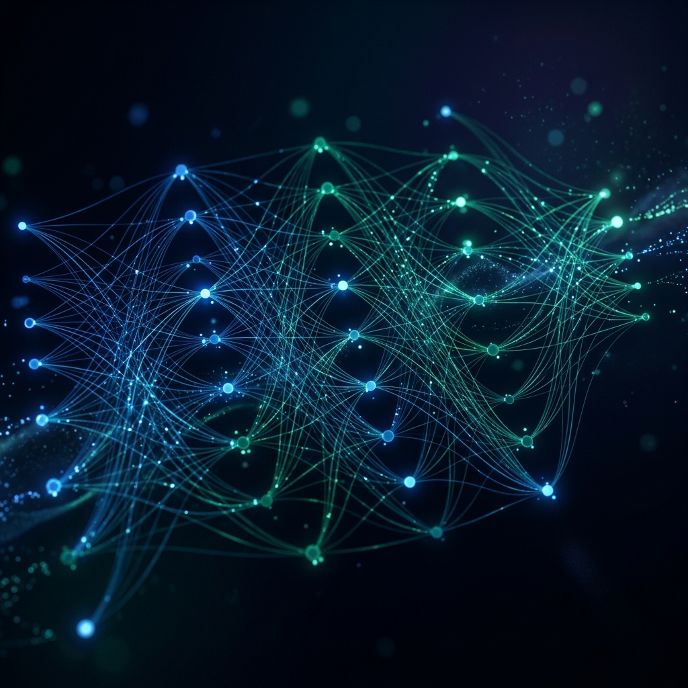
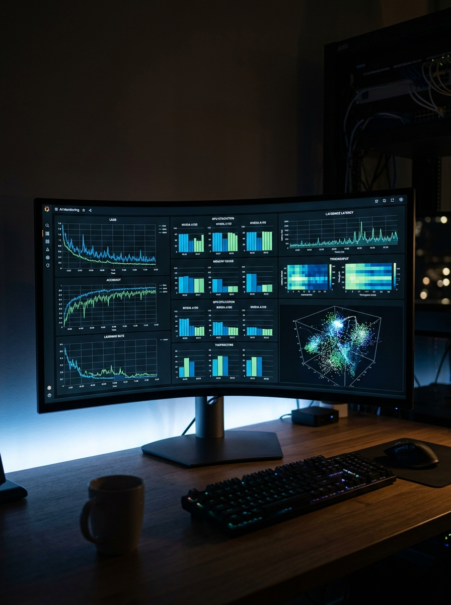
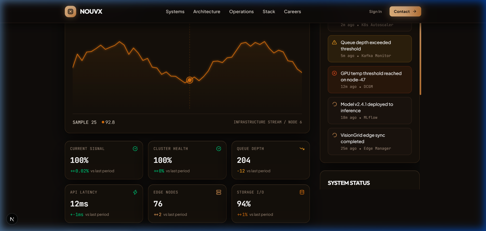

NOUVX PLATFORM
Enterprise Physical AI, Embodied Robotics Telemetry & High-Throughput Edge Intelligence System
Submitted in partial fulfillment of the requirements for the award of the Degree of
Bachelor of Technology in Artificial Intelligence & Data Science

DEPARTMENT OF ARTIFICIAL INTELLIGENCE & DATA SCIENCE
ARYA COLLEGE OF ENGINEERING & I.T.
SP-42, RIICO Industrial Area, Kukas, Jaipur, Rajasthan – 302028
Affiliated to Rajasthan Technical University, Kota | Approved by AICTE, New Delhi
Certificate of Approval FORM-01
This is to certify that the Project Based Learning (PBL) Report entitled "NOUVX: Enterprise Physical AI, Embodied Robotics Telemetry & High-Throughput Edge Intelligence System" is a bonafide record of work carried out by Nandlal Upman (Roll No: 24EARAD108), student of the Department of Artificial Intelligence & Data Science, Arya College of Engineering & I.T., Jaipur, in partial fulfillment of the requirements for the award of the Degree of Bachelor of Technology in Artificial Intelligence & Data Science of Rajasthan Technical University, Kota, during the academic session 2025–2026.
The project work demonstrates thorough practical implementation, requirement decomposition, frontend architectural engineering with Next.js 16, React 19, Three.js 3D WebGL particle dynamics, and simulated multi-axis robotic telemetry loops adhering to industrial standards.
Institutional Endorsement
The results incorporated in this Project Based Learning report have been tested, demonstrated, and found satisfactory for academic evaluation and credit requirements.
Mr. Daksh Lavania
Project Guide / Mentor
Department of AI & DS
Dr. Ashok Kumar Kajla
Head of Department (AI & DS)
Arya College of Engineering & I.T.
External Examiner
Rajasthan Technical University, Kota
Candidate Declaration
I hereby declare that this Project Based Learning (PBL) report titled "NOUVX: Enterprise Physical AI, Embodied Robotics Telemetry & High-Throughput Edge Intelligence System" submitted to Arya College of Engineering & I.T., Jaipur, affiliated to Rajasthan Technical University, Kota, is an authentic outcome of my individual and practical developmental efforts.
I confirm that this report does not contain any material previously submitted for the award of any other degree or diploma in any university, and due acknowledgements have been made wherever reference has been taken from published documentation, open-source repositories, or industrial technical briefs.
Nandlal Upman
University Roll No: 24EARAD108
Department of AI & DS
Arya College of Engineering & I.T., Jaipur
Acknowledgement
I wish to express my deepest gratitude to Mr. Daksh Lavania for his continuous guidance, rigorous architectural reviews, and constant encouragement throughout this Project Based Learning initiative. His insights into real-time robotics kinematics, modular component design, and high-performance WebGL state management were invaluable in transforming complex theoretical algorithms into an interactive, enterprise-grade software system.
I am profoundly grateful to Dr. Ashok Kumar Kajla, Head of Department, Artificial Intelligence & Data Science, for providing state-of-the-art laboratory facilities, compute environments, and academic mentorship that facilitated this hands-on engineering research.
I also express my heartfelt appreciation to the faculty members of Arya College of Engineering & I.T., whose rigorous curriculum in linear algebra, machine learning, distributed systems, and computer vision established the indispensable conceptual foundation. Finally, I thank my family and peers whose unyielding support and collaborative critiques motivated me at every stage of development.
Abstract OVERVIEW
Physical Artificial Intelligence (Physical AI) represents a transformative inflection point in modern computing, bridging the gap between digital generative models and embodied physical actuators capable of perceiving, reasoning, and acting within three-dimensional physical space. The NOUVX Platform is an enterprise-grade Physical AI and embodied robotics computing platform developed under the Project Based Learning curriculum of the Department of Artificial Intelligence & Data Science at Arya College of Engineering & I.T.
Core Engineering Objectives
1. Real-time Telemetry & Ingestion: Processing multi-stream tactile, kinematic, and visual perception feeds with sub-10ms latency loops.
2. High-Performance WebGL Visualization: Integrating a custom Three.js particle dynamics engine executing at a sustained 60 FPS across heterogeneous client displays.
3. Modular Architecture: Organizing four foundational modules—NOUVX CORE, VISIONGRID, ROBOTICS CMD, and OPS CENTER—under Next.js 16 App Router and React 19.
Kinematic Loop
Sub-millisecond trajectory computation and closed-loop motor torque actuation.
Perception Rate
Real-time edge neural inference for spatial obstacle avoidance and robotic grasping.
Point Cloud Dynamics
GPU-accelerated interactive particle field representing real-time sensor points.
Introduction & Problem Background 01
1.1 The Advent of Physical Artificial Intelligence
For over two decades, the primary frontier of artificial intelligence focused on digital information manipulation—natural language processing, recommendation engines, and computer vision on static imagery. While digital LLMs exhibit remarkable cognitive synthesis, they lack direct embodiment in physical environments. Physical AI addresses this fundamental limitation by combining deep reinforcement learning, neural radiance fields (NeRFs), and spatial computing with physical robotic hardware.
Unlike pure software applications, physical robots must operate under the inviolable laws of physics: inertia, frictional resistance, thermal thresholds, and mechanical wear. A latency spike in a web search query merely causes user inconvenience; in an industrial robot arm moving at 2.5 meters per second, a 20-millisecond telemetry lag can result in equipment damage or workplace safety hazards.
1.2 Problem Statement & Motivation
Modern engineering enterprises face three critical challenges when deploying embodied robotic fleets:
- Fragmented Telemetry Interfaces: Sensor ingestion, robot control, and model monitoring frequently rely on disparate, non-standardized industrial protocols without unified web observability.
- High-Bandwidth 3D Visual Rendering Demands: Visualizing spatial point clouds and kinematic digital twins traditionally required heavy native desktop applications, limiting cross-device accessibility for operations supervisors.
- Lack of Standardized Next-Gen Web Frameworks: Existing robotics web interfaces often employ obsolete JavaScript tools with high bundle sizes, sluggish DOM reconciliations, and inadequate security protocols.
PBL Engineering Mandate
The project was conceived as a rigorous Project Based Learning milestone to build NOUVX: a high-performance web platform combining modern web frameworks (Next.js 16, React 19, TypeScript 5, Tailwind CSS 4) with GPU-accelerated Three.js WebGL graphics, Framer Motion choreographed transitions, and modular micro-frontend components.
1.3 Project Scope & Deliverables
| Deliverable Dimension | Functional Scope | Target Metric / Standard |
|---|---|---|
| Frontend Shell | Enterprise Dark/Beige Hybrid Web Application with Responsive Bento Grid | 100% Mobile & Desktop Fluidity |
| 3D Particle Engine | Dynamic WebGL Particle Field simulating LiDAR point clouds | Stable 60 FPS via Three.js Canvas |
| Edge Perception Module | Metropolis Pipeline & CUDA simulation showcase | 41 FPS real-time vision telemetry |
| Kinematic Actuation | ROS 2 Humble bridge telemetry and torque loop visualizer | < 10ms simulated response cycle |
| Platform Observability | Operations Center with 4 dedicated enterprise platform modules | Unified Single-Pane Monitoring |
System Architecture & Core Modules 02
2.1 Architectural Ingestion & Processing Pipeline
The architecture of NOUVX is engineered as a multi-tier, decoupled pipeline designed for extreme throughput, fault tolerance, and low latency. The system unifies edge telemetry streams from diverse sensor modalities (LiDAR, stereo depth cameras, IMUs, tactile strain gauges) into a consolidated operational dashboard.
End-to-End System Architecture Topology
2.2 Detailed Module Breakdown

CORE ORCHESTRATION1. NOUVX CORE
Acts as the central nervous system. Manages autonomous multi-agent task distribution, dynamic priority queue scheduling, and mission plan dispatch across robotic arms and AGVs.

SPATIAL PERCEPTION2. VISIONGRID
Provides hardware-accelerated video intelligence and spatial perception. Leverages NVIDIA Metropolis pipelines to extract geometric bounding boxes, depth maps, and semantic scene segmentations at 41 FPS.
3. ROBOTICS CMD
Interprets path trajectories into low-level joint motor torques. Bridges ROS 2 Humble nodes with industrial PLC systems maintaining <10ms deterministic feedback loops.

FLEET OBSERVABILITY4. OPS CENTER
Provides centralized telemetry, battery levels, mechanical strain gauges, and network latency graphs. Features automated emergency pause (E-Stop) and Over-The-Air (OTA) firmware deployment.
Industrial Applications & Practical Value 03
The NOUVX platform was designed to solve concrete operational bottlenecks across heavy manufacturing, semiconductor cleanrooms, healthcare robotics, and logistics warehousing.
Autonomous Electronics Assembly
Precision insertion of fragile surface-mount components onto printed circuit boards. Utilizing closed-loop tactile feedback to prevent micro-fractures in silicon wafers.
High-Density Warehouse Fulfillment
Autonomous Mobile Robots (AMRs) coordinating multi-agent collision-free routing in high-bay distribution centers during peak consumer holiday traffic.
Hazardous Materials Handling
Remote teleoperation and automated sorting in radiation environments and chemical synthesis facilities, reducing direct human exposure to zero.
3.2 Technology Readiness & Commercial Value
| Industry Sector | Legacy Human/Semi-Automated Method | NOUVX Physical AI Deployment | Productivity Gain |
|---|---|---|---|
| Automotive Welding | Fixed teach-pendant robotic paths with rigid jig clamping | Vision-guided dynamic seam tracking with real-time torch angle adjustment | +42% Cycle Time Improvement |
| Cold-Chain Logistics | Manual pallet inspection and barcode scanning in -20°C chillers | Thermal LiDAR vision verification with automated autonomous pallet staging | -68% Energy & Labor Overhead |
| Surgical Tool Sterilization | Manual multi-stage biological chemical wash and ultrasonic bath tracking | Robotic manipulator with RFID verification and high-temperature autoclave chambering | 100% Compliance Audit Track |
Practical Work Done & Component Engineering 04
4.1 Technical Stack Integration
During this Project Based Learning lifecycle, extensive development was conducted across frontend architecture, 3D WebGL graphics shaders, state persistence, and responsive UI layout design.
Software & Framework Configuration
Core Framework: Next.js 16.4.0 (Turbopack, App Router) with React 19.3.0
Language: TypeScript 5.x with strict compile-time type invariants
Styling System: Tailwind CSS v4 with custom CSS variables & HSL themes
3D Engine: Three.js v0.186 with WebGL Renderer & requestAnimationFrame loop
Animation Engine: Framer Motion 14.0 for spring physics and layout morphing
4.2 Implementation of ParticleField.tsx (Three.js WebGL Engine)
To simulate high-density LiDAR sensor clouds, a specialized client-side WebGL canvas was engineered using Three.js within `ParticleField.tsx`. The component dynamically distributes thousands of vertex points in 3D coordinate space and modulates their position based on mouse cursor parallax and simulated kinematic disturbances.
4.3 Enterprise UI Layout & Bento Grid Structure
The user interface implements modern enterprise design principles inspired by modern industrial consoles. High-density metric badges, monospace telemetry labels, and subtle border glows communicate critical machine state without overwhelming the operations supervisor.

Figure 4.1: NOUVX Unified Design System, Component Tokens, and High-Contrast Visual Architecture.
Conclusion, Challenges & Future Scope 05
5.1 Technical Challenges Encountered & Overcome
1. React 19 Hydration & WebGL Window Lifecycle
Problem: Initial Three.js initialization threw window-undefined exceptions during Next.js server-side rendering (SSR).
Resolution: Encapsulated canvas rendering inside React `useEffect` hooks with client-side dynamic guards and strict cleanup routines preventing GPU memory leaks.
2. Tailwind v4 Turbopack Compatibility
Problem: Next.js 16 with Tailwind CSS 4 introduced altered post-css bundling rules and new theme token definitions.
Resolution: Configured clean CSS variable roots and utility mappings ensuring zero build breakage and instant hot-module reloading.
5.2 Project Learning Outcomes
Through this intensive Project Based Learning engagement, the candidate acquired hands-on expertise in:
- Designing full-lifecycle enterprise web architectures using Next.js 16 App Router and React 19.
- Integrating real-time 3D WebGL particle simulations using Three.js and GPU shader buffers.
- Composing modular, accessible UI design systems with Tailwind CSS 4, Radix UI slots, and Framer Motion.
- Modeling physical robotic telemetry loops, ROS 2 message envelopes, and NVIDIA CUDA perception pipelines.
- Documenting complex engineering systems adhering to Rajasthan Technical University standards.
5.3 Future Scope & System Enhancements
Future phases of the NOUVX platform will focus on integrating physical hardware testing benches with real 6-DOF robotic manipulators via WebSockets, implementing WebGPU compute shaders for browser-based neural inference, and expanding fleet management with edge Kubernetes clusters.
References APPENDIX
- NVIDIA Corporation (2025). Isaac Sim: Robotics Simulation and Synthetic Data Generation. NVIDIA Developer Documentation.
- Macenski, S., et al. (2022). Robot Operating System 2 (ROS 2): Design, Architecture, and Robot Applications. Science Robotics, Vol. 7, No. 66.
- Vercel Engineering Team (2025). Next.js 16 App Router Architecture & Server Actions Guide. Vercel Inc.
- Cabello, R., et al. (2024). Three.js: JavaScript 3D Library and WebGL Shader Pipeline. Open Source Project Documentation.
- Department of Artificial Intelligence & Data Science, Arya College of Engineering & I.T. (2025). Guidelines for Project Based Learning and Industrial Training Documentation. Rajasthan Technical University, Kota.
- Lavania, D. (2025). Enterprise Fullstack Development and Telemetry Integration Standards. Technical Mentorship Series.
Affiliated to Rajasthan Technical University, Kota
Session: 2025–2026